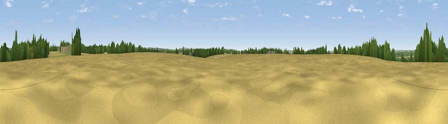

Viewpoint near West Tisted
#40149 in England · top 60% of its area beats it · near West TistedWhere it is
The exact computed spot (SU 65571 29978). Click the marker for map links.
The view, rendered

A 360° render of this exact spot computed from the terrain model, tree cover and land cover — summer colours, afternoon light, calibrated against photographs of famous viewpoints. Real trees, hedges and buildings will differ in detail.
The panorama
Grey silhouette: terrain skyline in each direction (720 bearings, Earth curvature and refraction included). Dashed green: skyline with trees (+15 m) and buildings (+8 m) as obstacles. Blue strip: how far the ground is visible on each bearing.
Where the view opens
Wedge length = distance to the farthest visible ground on that bearing (vegetation-aware). Rings at 10, 25 and 50 km.
What fills the view
61% cropland · 21% grassland · 16% woodland · 1% built-up
Angular shares of the visible panorama (visual magnitude), not map area. Landscape diversity 0.43 (0–1 Shannon).
Key numbers
More beautiful places nearby
The staircase of upgrades: each row has a higher view potential than everything closer. Driving times are estimates from straight-line distance, calibrated against real road routing — check an actual route before setting out.
| Place | Direction | Drive | Score |
|---|---|---|---|
| Viewpoint near West Tisted | WSW · 1 km | ~4 min | 54.4 |
| Viewpoint near Steep | ESE · 9 km | ~17 min | 57.8 |
| Beacon Hill | SW · 9 km | ~18 min | 71.7 |
| Viewpoint near Meonstoke | S · 10 km | ~19 min | 74.8 |
| Viewpoint near Buriton | SSE · 11 km | ~21 min | 75.3 |
| Viewpoint near Buriton | SSE · 12 km | ~22 min | 80.0 |
| Beacon Hill | SE · 19 km | ~33 min | 85.8 |
| Chanctonbury Ring | ESE · 51 km | ~73 min | 87.0 |
51.06540, -1.06561 · source: osm peak · position refined by local search. Computed location — check access rights before visiting.